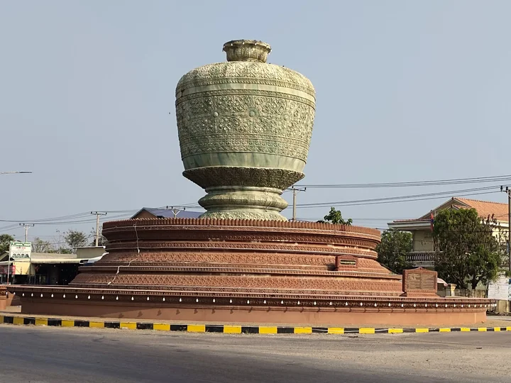

អំពីខេត្តពោធិ៍សាត់
ខេត្តពោធិ៍សាត់ ស្ថិតនៅភាគពាយ័ព្យនៃប្រទេសកម្ពុជា និងជាខេត្តដែលសម្បូរទៅដោយធនធានធម្មជាតិ ដូចជា ព្រៃឈើ ភ្នំ និងទន្លេ។ ប្រជាជនភាគច្រើនប្រកបរបរកសិកម្ម និងនេសាទ ដែលធ្វើឱ្យជីវភាពមានភាពសាមញ្ញ និងស្ងប់ស្ងាត់។
ប្រវត្តិសង្ខេប
ខេត្តពោធិ៍សាត់មានប្រវត្តិយូរអង្វែងតាំងពីសម័យអាណាចក្រខ្មែរ។ ឈ្មោះ “ពោធិ៍សាត់” មកពីដើមពោធិ៍ដែលជានិមិត្តសញ្ញាព្រះពុទ្ធសាសនា និងសម្រស់ធម្មជាតិជុំវិញតំបន់នេះ។ ខេត្តនេះបានអភិវឌ្ឍយ៉ាងបន្តបន្ទាប់លើវិស័យកសិកម្ម និងទេសចរណ៍ធម្មជាតិ។
កន្លែងទេសចរណ៍សំខាន់ៗ
- ទឹកធ្លាក់ច្រាំងតិច
- ទឹកធ្លាក់អូរដា
- ភ្នំ១៥០០
- បឹងទន្លេសាបតំបន់ពោធិ៍សាត់
- ឧទ្យានជាតិជួរភ្នំក្រវាញ
ទីតាំងភូមិសាស្ត្រ
ខេត្តពោធិ៍សាត់ ស្ថិតនៅភាគពាយ័ព្យនៃប្រទេសកម្ពុជា មានព្រំប្រទល់ជាប់ខេត្តកំពង់ឆ្នាំង ខេត្តបាត់ដំបង និងខេត្តកោះកុង។ ខេត្តនេះមានភ្នំក្រវាញ និងតំបន់ព្រៃឈើធំៗ ដែលជួយរក្សាសម្រស់ធម្មជាតិ និងអាកាសធាតុត្រជាក់ស្រួល។